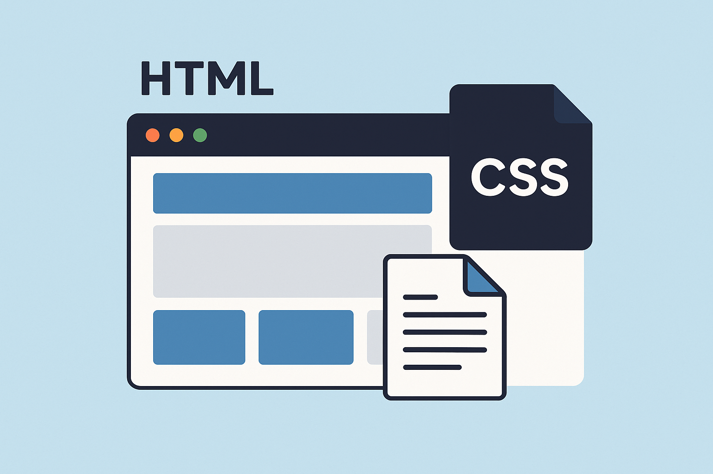
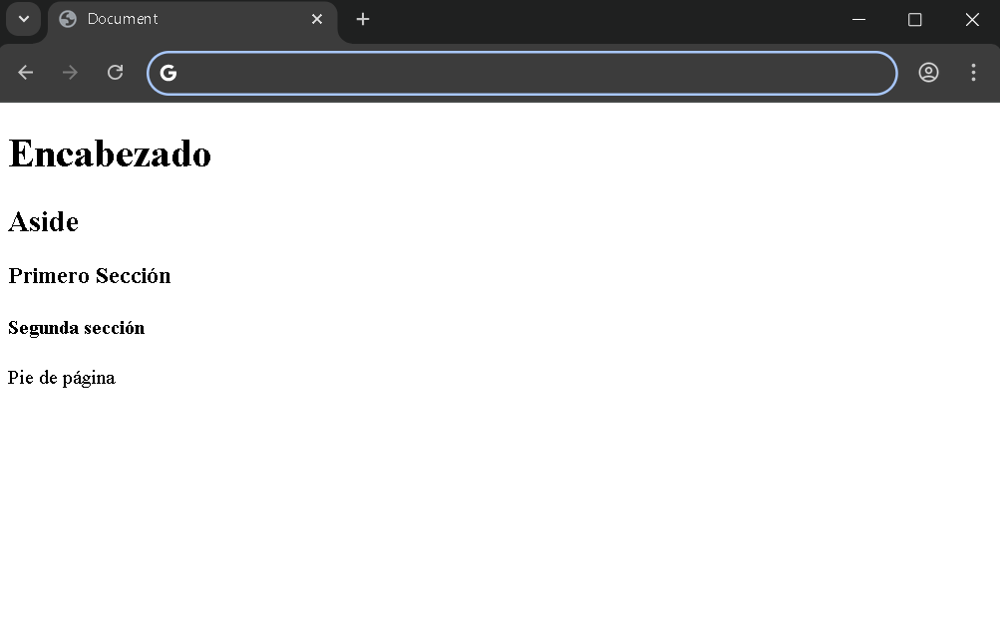
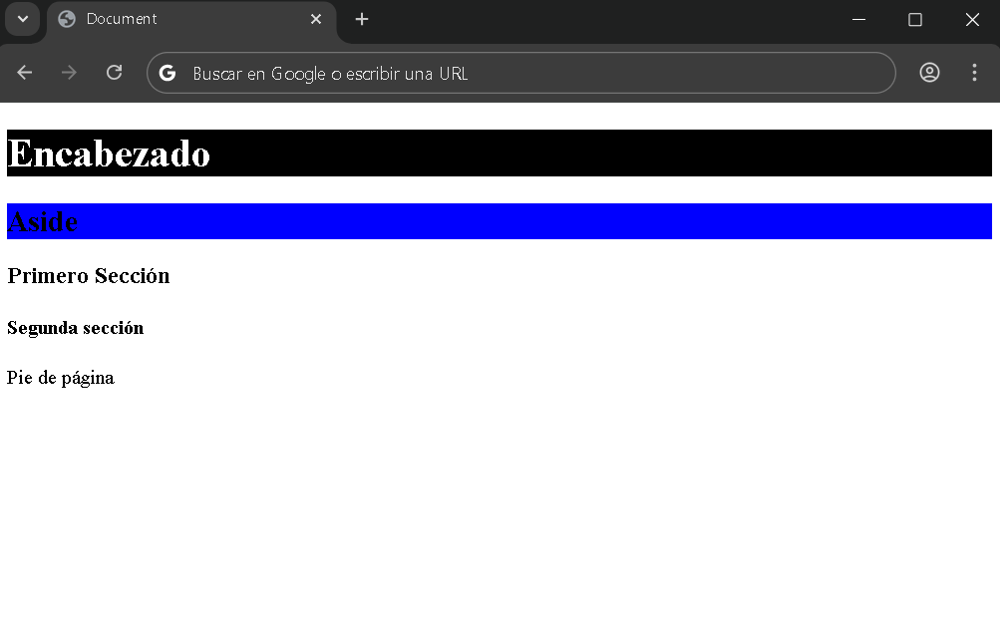
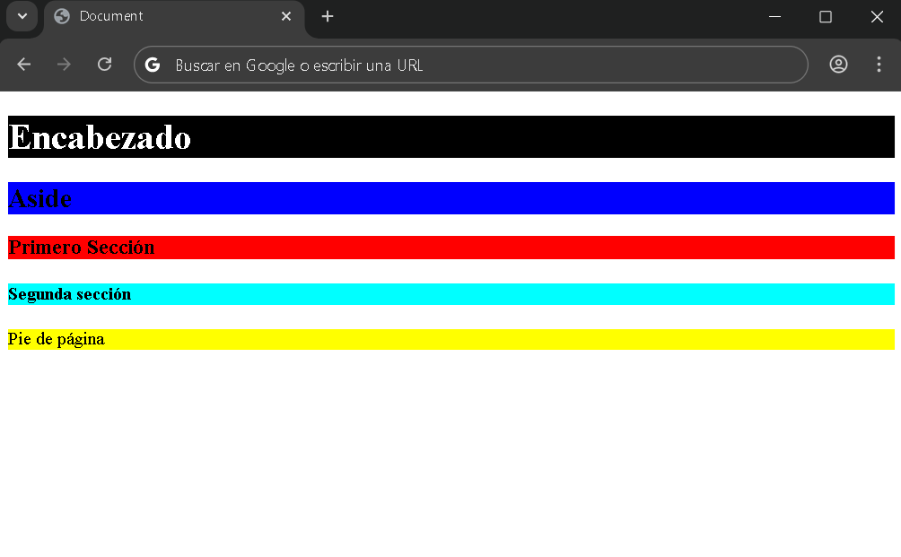
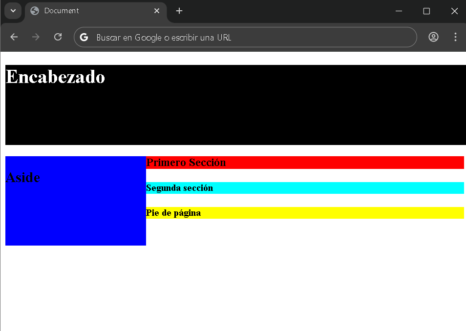
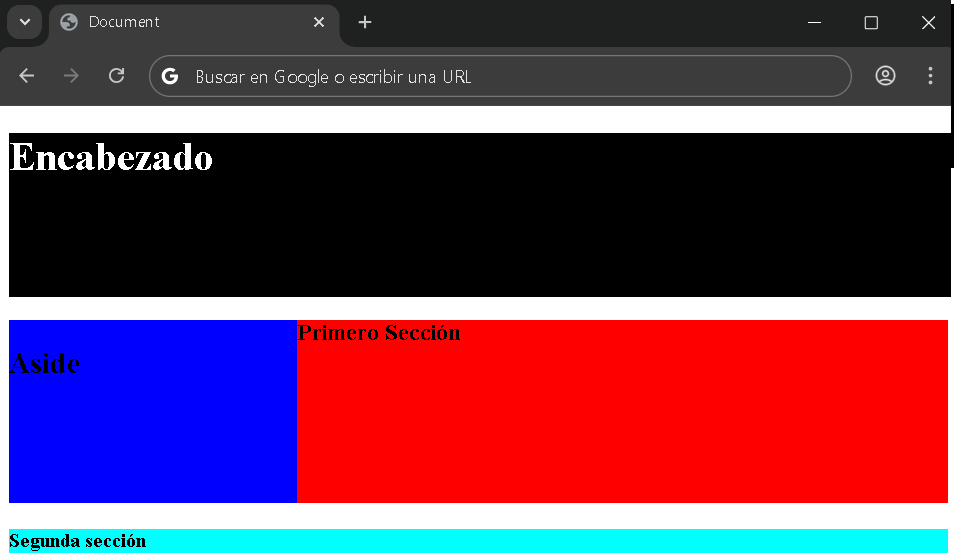
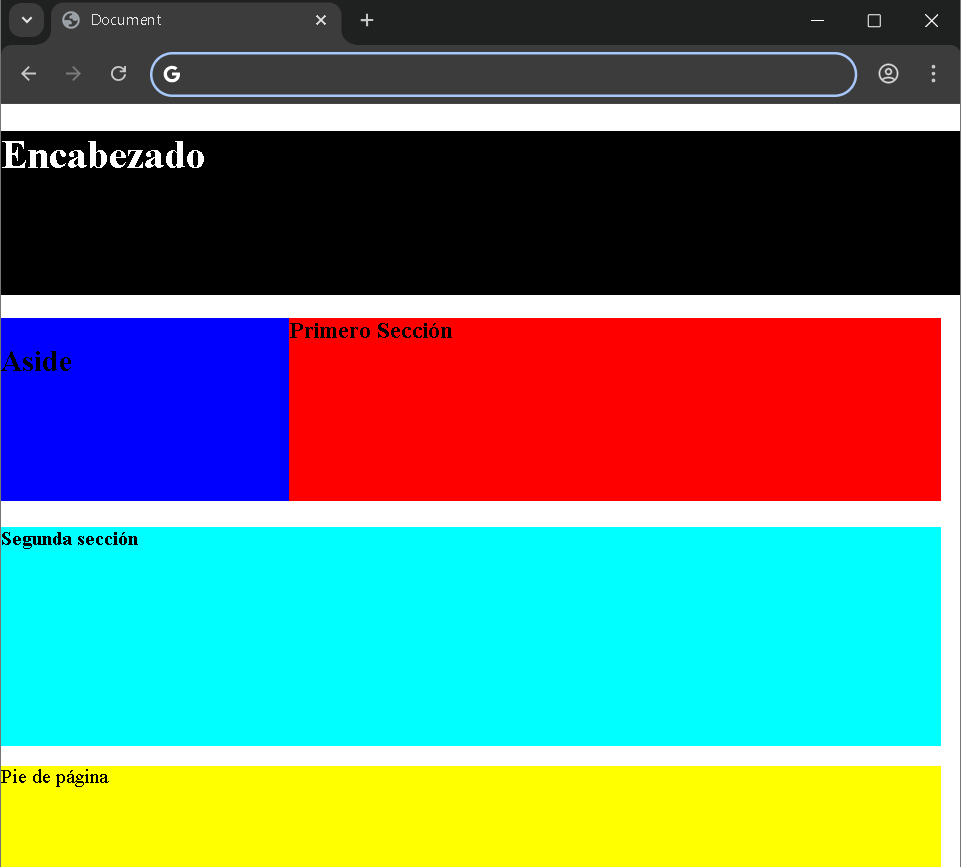
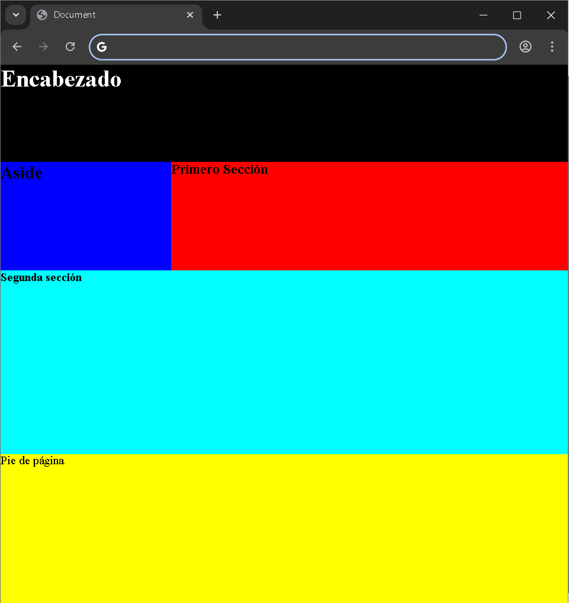

La maquetación en CSS tiene como finalidad brindar al usuario una estructura visual avanzada, personalizada y atractiva, que facilite la identificación de cada parte del contenido y destaque los elementos más importantes según el caso.
En esta ocasión comenzaremos con ejemplos de maquetación en CSS. Para ello, primero estableceremos la estructura básica en HTML. Dentro del documento agregaremos un <header>, seguido de un <article>, y dentro de este último incluiremos un <aside> y dos <section>, cada una con una clase diferente: una será sec1 y la otra sec2. finalmente, añadiremos el pie de página, representando por el <footer>.
Además, cada sección deberá contener información. En el <header> colocaremos un título con la etiqueta h1. En cada section dentro del artículo utilizaremos subtítulos como h2, h3 o h4. Para el <footer>, incluiremos un párrafo que servirá de contenido de práctica.
De esta manera tendremos listo el <body> del documento, que nos permitirá trabajar en el ejemplo de maquetación en CSS.
<body>
<header>
<h1>Encabezado</h1>
</header>
<article>
<aside>
<h2>Aside</h2>
</aside>
<section class="sec1">
<h3>Primer Sección>/h3>
</section>
<section class="sec2">
<h4>Segunda Sección</h4>
</section>
</article>
<footer>
<p>Pie de página</p>
</footer>
</body>A continuación, una imagen demostrativa de nuestro documento HTML, sin estilos CSS:

Ahora comenzaremos a trabajar con nuestro código CSS. El primer elemento al que aplicaremos estilo será al <header>. Para ello, le asignaremos un color de fondo negro utilizando la propiedad background-color con la declaración de black 🔳. Además, modificaremos el contenido del elemento h1 para que el texto se vea en color blanco, lo cual haremos a través de la propiedad color, declarando el valor white 🔲.
header{
background-color: 🔳black;
color: 🔲white;
}
A continuación, le daremos colores de fondo a los demás elementos <aside> y le daremos background-color de color azul 🟦 blue.
Así se tendría que estar viendo nuestro documento:

Ahora aplicaremos estilos de fondo a diferentes elementos. A la clase sec1 le asignaremos un color de fonde rojo, mientras que a la clase sec2 le daremos un color de fondo aqua. Recuerde que en CSS, para seleccionar una clase debemos colocar un punto antes de su nombre. Finalmente, al elemento <footer> le estableceremos un color de fondo amarillo.
.sec1{
background-color: 🟥red;
}
.sec2{
background-color: aqua;
}
footer{
background-color: 🟨 yellow;
}A continuación, veremos en una imagen como nos debe quedar el documento de ejemplo:

Por el momento, únicamente hemos trabajado con los colores de los elementos. A continuación, comenzaremos con la maquetación. Para ello, en el <body> asignaremos la propiedad width (Ancho) con el valor de 100vw y la propiedad height (Alto) con el valor 100vh. Estas unidades representan el 100% del ancho y de la altura de la ventana del navegador, respectivamente. Este tipo de maquetación es dinámica, lo que significa que se ajusta automáticamente al tamaño de la ventana. En la actualidad, este enfoque es muy utilizado, ya que permite que el diseño sea responsivo y se adapte fácilmente a diferentes tamaños de pantalla.
Para distribuir el espacio entre los elementos, asignaremos al encabezado un ancho de 100vw, de modo que ocupe todo el ancho del documento, y una altura de 18vh. Luego, crearemos un elemento div que contendrá al aside y al article. A este contenedor le aplicaremos la propiedad display coon el valor flex, lo que permitirá ubicar ambos elementos uno al lado del otro.
El aside tendrá un ancho de 30vw y una altura de 54vh, mientras que el article ocupará el espacio restante y tendrá una altura de 54vh. A continuacion, observaremos en la siguiente imagen cómo debería quedar nuestro documento.

Continuaremos con sec1. Le daremos el resto del alto que serían 20vh, que sería la misma altura que el aside
header{
background-color: 🔳 black;
color: ⬜ white;
height: 18vh;
width: 100vw;
}
div{
display: flex;
}
aside{
background-color: 🟦 blue;
width: 30vw;
height:20vh;
}
.sec1{
background-color: 🟥 red;
height: 20vh;
}
.sec2{
background-color: aqua;
}
footer{
background-color: yellow;
}
A continuación, trabajaremos con la sec2, asignándole un ancho de 100vw y altura de 24vh. Finalmente, nos queda el footer, al cual le daremos un ancho total de 100vw y una altura correspondiente al especio restante. Si al total de 100 restamos la altura del encabezado (18)y la del artículo (54), obtenemos 18vh, que será la altur asignada al footer para completar toda la estructurra del body.
Documento:
Solo nos queda eliminar los márgenes predeterminados de laas etiquetas h1, h2, h3, h4 y p. Así como el margen que el body trae por defecto, para eliminarlo utilizaremos el selector de elementos indicando body y le asignaremos la propiedad de margin: 0;.
